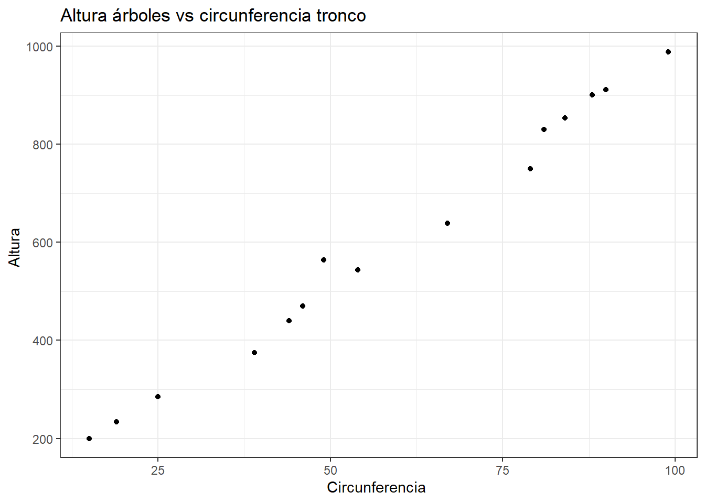
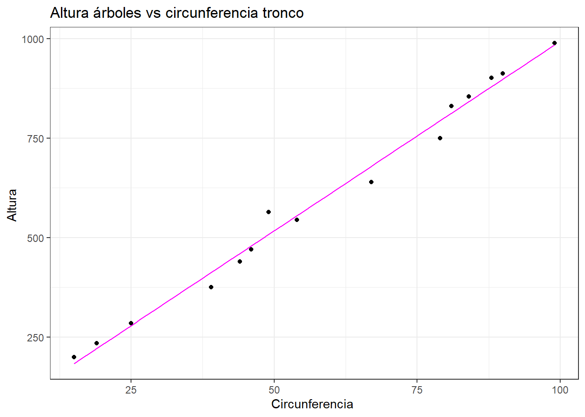

Interrogación 2 Métodos Bayesianos
Pregunta 1
a)
Si nos situamos en el contexto del problema presentado, para que las observaciones obtenidas sean representativas de lo que ocurrirá realmente en las votaciones, es necesario que cada votante registrado tenga igual probabilidad de ser seleccionado para ser parte de la votación, es decir, que la muestra obtenida haya sido seleccionada de manera aleatoria. Por otro lado, también es necesario que dicha muestra sea representativa de la población, es decir, que sea de un tamaño confiable (este tamaño no sólo hace referencia a las personas que son seleccionadas, si no que también a las personas que efectivamente responden la encuesta) y que esta incluya a una gran variedad y diversidad de personas. Otra condición relevante es que se debe ser cuidadoso a la hora de tomar la muestra para así evitar los distintos sesgos que pudiesen afectar el estudio, como por ejemplo el error de historia (generado a partir de eventos que ocurren al mismo momento que el estudio). Todo esto teniendo en cuenta que al ser una encuesta telefónica ya implica un nivel de sesgo debido a la falta de acceso a un teléfono por parte de un grupo de personas.
b)
Como se desea demostrar que la proporción de personas que aprobará la medida es menor al 50% y estamos basándonos desde un punto de vista clásico, entonces al plantear nuestras hipótesis, lo que queremos demostrar debe estar representado en la hipótesis alternativa, es decir, en \(H_1\). De esta manera, si definimos \(\theta\) como la proporción de personas que aprueba la medida de la incorporación del impuesto, entonces:
\[\begin{aligned} H_0: \theta \geq 0.5 \\ H_1: \theta < 0.5 \\ \end{aligned}\]Para encontrar en valor-p de este test asumiremos que la distribución de la muestra es binomial, ya que el problema hace relación al conteo de personas que aprueban el impuesto, y como el valor de n es lo suficientemente grande (>30) sabemos que en base al teorema central de límite, podemos aproximar dicha binomial por una distribución normal.
Entonces, en base a que \(\theta\) es una proporción, calcularemos el estadístico Z y el valor-p correspondiente:
\[ Z= \frac{\widehat \theta-\theta_0}{sd}=\frac{\widehat \theta-\theta_0}{\sqrt{\frac{(1-\theta_0)\cdot \theta_0}{n}}} \]
Donde \(\widehat \theta\) corresponde a la proporción muestral (\(40\%\)) , \(\theta_0\) es el valor a comparar, en este caso 50% y n el tamaño de la muestra (327). Así:
\[ Z=\frac{0.4-0.5}{\sqrt{\frac{(1-0.5)\cdot\ 0.5}{327}}} \approx -3.6167 \]
y valor-p= 0.0001491914.
Por lo cual, si consideramos un 95% de confianza, podemos concluir que como el valor-p < 0.05, entonces se rechaza la hipótesis \(H_0: \theta \geq 0.5\) y se concluye desde un enfoque clásico que existe evidencia para no respaldar la aseveración de que la proporción de personas que aprueba la medida de la incorporación del impuesto es mayor o igual al 50%.
Por consiguiente, se puede probar que la proporción de personas que aprobará la medida es menor a 50 %.
c)
Se propone una distribución de la muestra \(Binomial(327,\theta)\), ya que el problema hace relación al conteo de personas que aprueban el impuesto de un total de 327 que respondieron la encuesta, por lo tanto, como se tiene solo dos opciones, aprobar o rechazar la medida, se tendría una suma de distribuciones Benoulli. Además, como no se tiene conocimiento al respecto de la proporción de interés, propondremos una distribución a priori no informativa para \(\theta\), tal que \(\theta \sim Beta(1,1)\).
Luego se tiene que la distribución a posteriori está dada por:
\[\begin{align*} p(\theta|y) &\propto p(y|\theta)\cdot p(\theta)\\ &\propto \binom{327}{y} \theta^y(1-\theta)^{327-y} \cdot \theta^{\alpha-1}(1-\theta)^{\beta-1} \end{align*}\]con \(y=\sum_{i=1}^{327}{x_i} =\) número de éxitos \(= 0.4 \cdot 327 \approx 131\). Así:
\[\begin{align*} p(\theta|y) &\propto p(y|\theta)\cdot p(\theta)\\ &\propto\binom{327}{131} \theta^{131}(1-\theta)^{196} \cdot \theta^{0}(1-\theta)^{0}\\ &\propto \theta^{131} (1-\theta)^{196}\\ \end{align*}\]El cual representa el Kernel de una distribución \(Beta(132,197)\)
d)
Para evaluar las conjeturas propuestas anteriormente desde un punto de vista Bayesiano, es decir, considerando que lo que queremos demostrar debe estar representado en la hipótesis nula \(H_0\) y definiendo \(\theta\) como la proporción de personas que aprueba la medida de la incorporación del impuesto, estableceremos las siguientes hipótesis:
\[\begin{aligned} H_0: \theta < 0.5 \\ H_1: \theta \geq 0.5 \\ \end{aligned}\]Con un función de pérdida 0-1 generalizada tal que:
\(l(a_0,w_0) = l(a_1,w_1)=0\)
\(l(a_1,w_0)= c_1 \qquad >0\)
\(l(a_0,w_1)=c_2 \qquad >0\)
Donde \(a_0\)= decido \(H_0\) , \(a_1\) = decido \(H_1\), y \(w_0\) y \(w_1\) los espacios a donde pertenece en la realidad \(\theta\).
Analizando en profundad el problema, podemos notar que si se decide aceptar \(H_0:\theta<0.5\) dado que la realidad es \(H_1:\theta\geq 0.5\) (se subestima el valor \(\theta\)), entonces se pensaría que la mayoría de las personas no aprobaron la medida o se abstuvieron, por lo cual no se implementaría el impuesto adicional y no se tendría un fondo para costear medidas preventivas frente a potenciales inundaciones, lo cual es una consecuencia bastante grave pensando en la ocurrencia de una inundación. A esto se le suma el descontento de la mayoría de las personas al no respetarse su decisión de implementar dicho impuesto. Por otro lado, si se decide aceptar \(H_1:\theta\geq 0.5\) dado que la realidad es \(H_0:\theta<0.5\) (se sobrestima \(\theta\)), entonces se pensaría que la mayoría de las personas aprueba el impuesto cuando no es así, por lo cual este se cobraría generando un descontento de la población. Ahora bien, si comparamos ambas consecuencias, como el impuesto tiene un valor bajo (1 centavo por dólar) y en ambos casos habría descontento social, tenemos que es mucho más grave no contar con medidas preventivas en caso de una catástrofe como lo es la inundación, por lo tanto asignamos los valores c1 = 1 y c2 = 3, dejando en claro que es peor subestimar que sobrestimar el valor de \(\theta\).
En base a esto, se decide \(a_0\) (acepto \(H_0\)) si \[P\left(\theta<0.5|y\right) > \frac{c_2}{c_1+c_2} = \frac{3}{4} \].
Luego, como \(P\left(\theta<0.5|y\right) = 0.9998409>0.75\) (calculado con pbeta(0.5, 132 , 197)), entonces se acepta \(H_0:\theta<0.5\), es decir, que se prueba que la proporción de personas que aprobará la medida del impuesto es de menos del 50%. Notemos que tanto desde el punto de vista clásico como del bayesiano se llega a la misma conclusión.
Pregunta 2
Consideremos un problema de test de hipótesis para decidir entre dos modelos candidatos, por un lado se tiene el modelo \(M_0\):
\[\begin{aligned} y_1,...,y_n|(\theta=0)\sim Normal(0,\sigma^2) \end{aligned}\]con \(\sigma>0\) conocido. Por otro lado se tiene el modelo \(M_1\):
\[\begin{aligned} y_1,...,y_n|\theta\sim Normal(0x_i,\sigma^2) \end{aligned}\]donde \(x_1,…,x_n\) corresponden a un predictor dado, \(\sigma>0\) conocido, \(y_1,...,y_n\) independientes y distribución a priori \(Normal(0,\tau_\theta^2)\) para \(\theta\). Para este caso encontraremos una expresión para el Factor de Bayes:
\[\begin{aligned} BF= \frac{p(\textbf{y}|M_0)}{p(\textbf{y}|M_1)} \end{aligned}\]a través de la utilización del resultado de Tierney y Kadane. En primer lugar, calcularemos \(\tilde{\theta}\) a partir del calculo de la distribución a posteriori de \(\theta\) para el modelo \(M_1\):
Sea \(\qquad M_1: y_1,…,y_n|(\theta)\sim Normal(\theta x_i,\sigma^2)\qquad y \qquad \theta \sim Normal(0, \tau_\theta^2)\)
\[\begin{align*} p(\theta|\textbf{y})\quad &\propto \qquad p(\textbf{y}|\theta)\quad\cdot\quad p(\theta)\\ &=\prod_{i=1}^{n} \left(\frac{1}{2\pi\sigma^2}\right)^{\frac{1}{2}} \cdot exp \left\lbrace -\frac{1}{2\sigma^2}(y_i-\theta x_i)^2 \right\rbrace \cdot \left(\frac{1}{2\pi\tau_\theta^2}\right)^{\frac{1}{2}} \cdot exp \left\lbrace -\frac{1}{2\tau_\theta^2}(\theta-0)^2 \right\rbrace \\ &= \left(\frac{1}{2\pi\sigma^2}\right)^{\frac{n}{2}} \cdot exp \left\lbrace -\frac{1}{2\sigma^2} \sum_{i=1}^{n}(y_i-\theta x_i)^2 \right\rbrace \cdot \left(\frac{1}{2\pi\tau_\theta^2}\right)^{\frac{1}{2}} \cdot exp \left\lbrace -\frac{1}{2\tau_\theta^2}\theta^2 \right\rbrace \\ &= \left(\frac{1}{\left(2\pi\sigma^{2} \right)^n \cdot 2\pi\tau_\theta^2}\right)^{\frac{1}{2}} \cdot exp \left\lbrace -\frac{1}{2\sigma^2} \left( \sum_{i=1}^{n}y_i^2 - 2\theta \sum_{i=1}^{n}x_i y_i + \theta^2 \sum_{i=1}^{n}x_i^2 \right)\right\rbrace \cdot exp \left\lbrace -\frac{1}{2\tau_\theta^2}\theta^2 \right\rbrace \\ &= \left(\frac{1}{\left(2\pi\sigma^{2} \right)^n \cdot 2\pi\tau_\theta^2}\right)^{\frac{1}{2}} \cdot exp \left\lbrace -\frac{1}{2\sigma^2} \sum_{i=1}^{n}y_i^2 \right\rbrace \cdot exp \left\lbrace -\frac{1}{2}\left(\frac{1}{\sigma^2}\left(-2\theta \sum_{i=1}^{n}x_i y_i + \theta^2 \sum_{i=1}^{n}x_i^2\right) + \frac{1}{\tau_\theta^2}\theta^2\right) \right\rbrace \\ &= \left(\frac{1}{\left(2\pi\sigma^{2} \right)^n \cdot 2\pi\tau_\theta^2}\right)^{\frac{1}{2}} \cdot exp \left\lbrace -\frac{1}{2\sigma^2} \sum_{i=1}^{n}y_i^2 \right\rbrace \cdot exp \left\lbrace -\frac{1}{2}\left(-\frac{2\sum_{i=1}^{n}x_i y_i}{\sigma^2}\theta + \theta^2 \left(\frac{\sum_{i=1}^{n}x_i^2}{\sigma^2}+\frac{1}{\tau_\theta^2}\right)\right) \right\rbrace \\ &= \left(\frac{1}{\left(2\pi\sigma^{2} \right)^n \cdot 2\pi\tau_\theta^2}\right)^{\frac{1}{2}} \cdot exp \left\lbrace -\frac{1}{2\sigma^2} \sum_{i=1}^{n}y_i^2 \right\rbrace \cdot exp \left\lbrace -\frac{1}{2}\left (\frac{\sum_{i=1}^{n}x_i^2}{\sigma^2}+\frac{1}{\tau_\theta^2}\right) \left(\theta^2-2\theta \frac{\sum_{i=1}^{n}x_i y_i}{\sigma^2}\left(\frac{\sum_{i=1}^{n}x_i^2}{\sigma^2}+\frac{1}{\tau_\theta^2}\right)^{-1} \right) \right\rbrace \\ \end{align*}\]En donde podemos notar que se está presente al kernel de una \(Normal\left(\frac{\sum_{i=1}^{n}x_i y_i}{\sigma^2}\left(\frac{\sum_{i=1}^{n}x_i^2}{\sigma^2}+\frac{1}{\tau_\theta^2}\right)^{-1} ,\left(\frac{\sum_{i=1}^{n}x_i^2}{\sigma^2}+\frac{1}{\tau_\theta^2}\right)^{-1} \right)\), y como es una distribución normal, se tiene que la media es igual a la moda, por lo tanto la moda posteriori para el modelo \(M_1 = \tilde{\theta} = \frac{\sum_{i=1}^{n}x_i y_i}{\sigma^2}\left(\frac{\sum_{i=1}^{n}x_i^2}{\sigma^2}+\frac{1}{\tau_\theta^2}\right)^{-1}\)
Luego, debemos encontrar \(\tilde\sum = \left(-D^2 \log{(\tilde\theta)}\right)^{-1}\) :
\[\begin{align*} D^2 \log(\tilde\theta ) &= \frac{d^2 \log{(p(y|\theta)\cdot p(\theta))}}{ \theta^2}\\ &= \frac{d^2}{ d \theta^2} \log \left( \left(\frac{1}{\left(2\pi\sigma^{2} \right)^n \cdot 2\pi\tau_\theta^2}\right)^{\frac{1}{2}} \cdot exp \left\lbrace -\frac{1}{2\sigma^2} \sum_{i=1}^{n}y_i^2 \right\rbrace \cdot exp \left\lbrace -\frac{1}{2}\left(-\frac{2\sum_{i=1}^{n}x_i y_i}{\sigma^2}\theta + \theta^2 \left(\frac{\sum_{i=1}^{n}x_i^2}{\sigma^2}+\frac{1}{\tau_\theta^2}\right)\right) \right\rbrace \right) \\ &=\frac{d^2}{ d \theta^2} \frac{1}{2} \log \left(\frac{1}{\left(2\pi\sigma^{2} \right)^n \cdot 2\pi\tau_\theta^2}\right)^{\frac{1}{2}} - \frac{1}{2\sigma^2}\sum_{i=1}^{n}y_i^2 -\frac{1}{2}\left( -\frac{2\sum_{i=1}^{n}x_i y_i}{\sigma^2}\theta + \theta^2 \left(\frac{\sum_{i=1}^{n}x_i^2}{\sigma^2}+\frac{1}{\tau_\theta^2}\right)\right) \\ &=\frac{d}{ d \theta} -\frac{1}{2}\left(-\frac{2\sum_{i=1}^{n}x_i y_i}{\sigma^2}+ 2\theta \left(\frac{\sum_{i=1}^{n}x_i^2}{\sigma^2}+\frac{1}{\tau_\theta^2}\right)\right) \\ &= - \left(\frac{\sum_{i=1}^{n}x_i^2}{\sigma^2}+\frac{1}{\tau_\theta^2}\right) \end{align*}\]Entonces:
\[\begin{align*} \tilde\sum = \left(\frac{\sum_{i=1}^{n}x_i^2}{\sigma^2}+\frac{1}{\tau_\theta^2}\right)^{-1} \end{align*}\]Debido al resultado anterior y al resultado de Tierney y Kadane, tenemos que:
\[\begin{align*} p(y|M_1) &\approx (2\pi)^{\frac{1}{2}}\cdot \left|\tilde\sum\right|^{\frac{1}{2}}\cdot p(y|\tilde\theta)\cdot p(\tilde\theta)\\ p(y|M_1) &\approx (2\pi)^{\frac{1}{2}}\cdot \left| \left(\frac{\sum_{i=1}^{n}x_i^2}{\sigma^2}+\frac{1}{\tau_\theta^2}\right)^{-1} \right|^{\frac{1}{2}} \cdot \left(\frac{1}{\left(2\pi\sigma^{2} \right)^n \cdot 2\pi\tau_\theta^2}\right)^{\frac{1}{2}} \cdot exp \left\lbrace -\frac{1}{2\sigma^2} \sum_{i=1}^{n}y_i^2 \right\rbrace \cdot\\ &\qquad exp \left\lbrace \left(\frac{\sum_{i=1}^{n}x_i y_i}{\sigma^2} \right)^2\cdot \left(\frac{\sum_{i=1}^{n}x_i^2}{\sigma^2}+\frac{1}{\tau_\theta^2}\right)^{-1} - \left(\left(\frac{\sum_{i=1}^{n}x_i^2}{\sigma^2}+\frac{1}{\tau_\theta^2}\right)^{-1} \cdot \frac{\sum_{i=1}^{n}x_i y_i}{\sigma^2}\right)^2 \cdot \frac{\sum_{i=1}^{n}x_i^2}{2\sigma^2} - \frac{1}{2\tau_\theta^2}\cdot \left(\left(\frac{\sum_{i=1}^{n}x_i^2}{\sigma^2}+\frac{1}{\tau_\theta^2}\right)^{-1} \cdot \frac{\sum_{i=1}^{n}x_i y_i}{\sigma^2}\right)^2 \right\rbrace \\ \\ &= (2\pi)^{\frac{1}{2}}\cdot \left| \left(\frac{\sum_{i=1}^{n}x_i^2}{\sigma^2}+\frac{1}{\tau_\theta^2}\right)^{-1} \right|^{\frac{1}{2}} \cdot \left(\frac{1}{\left(2\pi\sigma^{2} \right)^n \cdot 2\pi\tau_\theta^2}\right)^{\frac{1}{2}} \cdot exp \left\lbrace -\frac{1}{2\sigma^2} \sum_{i=1}^{n}y_i^2 \right\rbrace \cdot \\ &\qquad exp \left\lbrace \left(\frac{\sum_{i=1}^{n}x_i y_i}{\sigma^2} \right)^2\cdot \left[ \left(\frac{\sum_{i=1}^{n}x_i^2}{\sigma^2}+\frac{1}{\tau_\theta^2}\right)^{-1} - \left(\frac{\sum_{i=1}^{n}x_i^2}{\sigma^2}+\frac{1}{\tau_\theta^2}\right)^{-2}\cdot \left(\frac{\sum_{i=1}^{n}x_i^2}{2 \sigma^2}+\frac{1}{2 \tau_\theta^2}\right) \right] \right\rbrace \end{align*}\]Finalmente, como el modelo \(M_0\) corresponde a una hipótesis simple y en base a lo calculado anteriormente, el factor de bayes corresponde:
\[\begin{align*} BF &= \frac{p(\textbf{y}|M_0)}{p(\textbf{y}|M_1)}\\ &= \frac{\left( \frac{1}{2\pi \sigma^2} \right)^{\frac{n}{2}} \cdot exp \left\lbrace \frac{-1}{2\sigma^2} \sum_{i=1}^{n}y_i^2 \right\rbrace } { (2\pi)^{\frac{1}{2}}\cdot \left| \left(\frac{\sum_{i=1}^{n}x_i^2}{\sigma^2}+\frac{1}{\tau_\theta^2}\right)^{-1} \right|^{\frac{1}{2}} \cdot \left(\frac{1}{\left(2\pi\sigma^{2} \right)^n \cdot 2\pi\tau_\theta^2}\right)^{\frac{1}{2}} \cdot exp \left\lbrace -\frac{1}{2\sigma^2} \sum_{i=1}^{n}y_i^2 \right\rbrace \cdot exp \left\lbrace \left(\frac{\sum_{i=1}^{n}x_i y_i}{\sigma^2} \right)^2\cdot \left[ \left(\frac{\sum_{i=1}^{n}x_i^2}{\sigma^2}+\frac{1}{\tau_\theta^2}\right)^{-1} - \left(\frac{\sum_{i=1}^{n}x_i^2}{\sigma^2}+\frac{1}{\tau_\theta^2}\right)^{-2}\cdot \left(\frac{\sum_{i=1}^{n}x_i^2}{2 \sigma^2}+\frac{1}{2 \tau_\theta^2}\right) \right] \right\rbrace}\\ \\ &= \frac{\tau_\theta} { \left| \left(\frac{\sum_{i=1}^{n}x_i^2}{\sigma^2}+\frac{1}{\tau_\theta^2}\right)^{-1} \right|^{\frac{1}{2}} \cdot exp \left\lbrace \left(\frac{\sum_{i=1}^{n}x_i y_i}{\sigma^2} \right)^2\cdot \left[ \left(\frac{\sum_{i=1}^{n}x_i^2}{\sigma^2}+\frac{1}{\tau_\theta^2}\right)^{-1} - \left(\frac{\sum_{i=1}^{n}x_i^2}{\sigma^2}+\frac{1}{\tau_\theta^2}\right)^{-2}\cdot \left(\frac{\sum_{i=1}^{n}x_i^2}{2 \sigma^2}+\frac{1}{2 \tau_\theta^2}\right) \right] \right\rbrace} \end{align*}\]Pregunta 3
a)
Se tiene un estudio en donde se desea predecir la altura de los árboles de cierta familia, en términos de la circunferencia de su tronco. Para esto se genera el siguiente gráfico de dispersión de los datos:
Se plantea un ajuste de los datos a través de una regresión lineal por el origen de la siguiente manera:

Con el fin comprobar la precisión de este modelo se calculó el coeficiente de determinación, el cual al tener un valor de 0.9977 nos indica que el modelo:
\[ y_i= 10.1057\cdot x_i \]
con \(i=1,...,15\) se ajusta correctamente a los datos.
Por otro lado, desde un punto de vista clásico, para determinar la significancia de la circunferencia del tronco como predictor de la altura de un árbol, se realizó un test-t , a partir del cual se concluyó que la variable circunferencia si es significativa e influye en la altura de los árboles (estadístico t > cuantil).
b)
En el contexto del problema, con \(y_i = \beta\cdot x_i\) tendremos :
\[\begin{aligned} H_0: \beta \neq 0 \\ H_1: \beta = 0 \end{aligned}\]En efecto, utilizaremos el Factor de Bayes a favor del modelo \(M_ 0:\)Modelo de regresión lineal con covariable circunferencia significativa, o en contra del modelo \(M_1:\) Modelo regresión lineal sin covariable significativa.
Luego, en base al resultado del problema anterior pero invirtiendo la expresión del Factor de Bayes debido a que nuestro modelo simple ahora es \(M_1\) y considerando \(\sigma=250\) , \(\tau_\theta=100\), \(\sum_{i=1}^{15}x_i^2 = 62093\) y \(\sum_{i=1}^{15}x_iy_i= 627496\), se tiene que:
\[\begin{align*} BF &= \frac { \left| \left(\frac{\sum_{i=1}^{n}x_i^2}{\sigma^2}+\frac{1}{\tau_\theta^2}\right)^{-1} \right|^{\frac{1}{2}} \cdot exp \left\lbrace \left(\frac{\sum_{i=1}^{n}x_i y_i}{\sigma^2} \right)^2\cdot \left[ \left(\frac{\sum_{i=1}^{n}x_i^2}{\sigma^2}+\frac{1}{\tau_\theta^2}\right)^{-1} - \left(\frac{\sum_{i=1}^{n}x_i^2}{\sigma^2}+\frac{1}{\tau_\theta^2}\right)^{-2}\cdot \left(\frac{\sum_{i=1}^{n}x_i^2}{2 \sigma^2}+\frac{1}{2 \tau_\theta^2}\right) \right] \right\rbrace} {\tau_\theta}\\ \\ &= \frac { \left| \left(\frac{62093}{250^2}+\frac{1}{100^2}\right)^{-1} \right|^{\frac{1}{2}} \cdot exp \left\lbrace \left(\frac{627496}{250^2} \right)^2\cdot \left[ \left(\frac{62093}{250^2}+\frac{1}{100^2}\right)^{-1} - \left(\frac{62093}{250^2}+\frac{1}{100^2}\right)^{-2}\cdot \left(\frac{62093}{2\cdot 250^2}+\frac{1}{2 \cdot 100^2}\right) \right] \right\rbrace} {100}\\ \\ &\approx \frac { 1.00322 \cdot exp \left\lbrace 100.800031\cdot \left[ \left(1.00645 - 0.503227\right) \right] \right\rbrace} {100}\\ \\ &\approx \frac { 1.00322 \cdot exp \left\lbrace 50.72489 \right\rbrace} {100}\\ \\ &\approx (9.31245E-21)^{-1}\\ \\ &\approx 1.07383E20\\ \\ \end{align*}\]Finalmente como \(\log(FB)\approx 20.03094>2\) se tiene evidencia decisiva a favor del modelo \(M_0\) (se acepta \(H_0\)), lo que implica que al igual que el resultado obtenido en el enfoque clásico, la covariable circunferencia es significativa en el modelo e incide en la altura de los árboles.